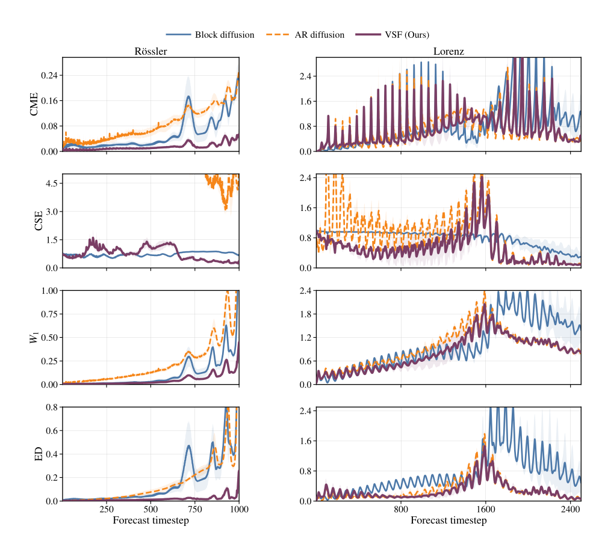
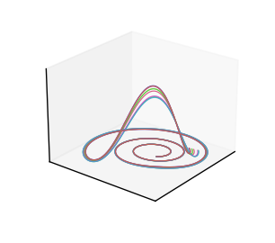
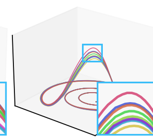
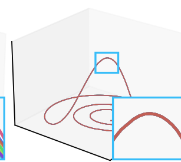
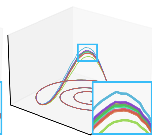
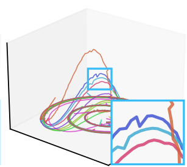
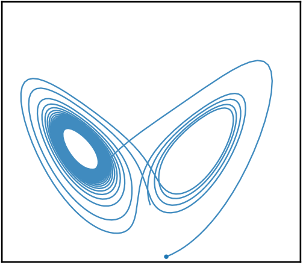

Hans Hao-Hsun Hsu1,2Minseon Gwak1,5Soon Hoe Lim3,4,*Pan Li2N. Benjamin Erichson1,5
1Lawrence Berkeley National Laboratory2Georgia Institute of Technology3KTH Royal Institute of Technology4Nordita5International Computer Science Institute*Work done while visiting ICSI/UC Berkeley
Overview. Standard Streaming Flow produces a single forecast from an observed history, whereas VSF represents a distribution over coherent futures.
Abstract
Streaming Flow models temporal evolution directly in physical time, but its standard non-latent formulation produces a single trajectory from a fixed observed history. We introduce Variational Streaming Flow (VSF), which conditions the physical-time velocity field on a variational latent variable inferred from local dynamics during training and sampled from a prior at inference. VSF is trained with a generalized energy reconstruction for latent-conditioned velocities. Under aggregate posterior–prior alignment, its population counterpart controls the energy distance between the prior-predictive and true conditional velocity laws. Across deterministic and partially observed stochastic systems, VSF improves long-horizon forecasting and, as a JEPA world-model predictor, improves goal-directed planning.
1 · Motivation
Why do we need a latent variable?
A symmetric two-branch construction isolates a limitation of standard Streaming Flow. When two futures share the same physical state at the split time, branch selection must be represented through small physical-state differences. Proposition A.1 shows that improving split-time fidelity increases the sensitivity of the branch-separating flow.
Bifurcation example. Better physical-state fidelity makes standard SF increasingly sensitive near the separator; a latent branch code removes this particular bottleneck.
Ground truth: one observed past, two possible futures
Let B ∈ {−1,+1} index the two futures. Both trajectories remain at x = 0 through the bifurcation time τ; for t > τ, B = −1 and B = +1 select the negative and positive branches:
ξB(t) = Bm(t), with m(t) = 0 before τ and positive after τ
B
future branch label
m(t)
branch displacement
τ
bifurcation time
σ₀
initial tube scale; the slider control
k
tube contraction rate, with σt = σ₀e−kt
JSFτ,t
flow-map sensitivity at the separator
B = +1
B = −1
Ground truth. The shared history ends at the split point (x, t) = (0, τ) = (0, 0.40).
Interactive illustration of Proposition A.1
Standard SF: fidelity and sensitivity are linked
The population-optimal marginal field must infer branch identity from x:
v⋆SF(x,t) = −kx + q(t)tanh(xm(t)e2kt/σ₀²)
For this illustration, the split occurs at τ = 0.40. The left panel integrates two fixed probes from xτ = ±0.01. Dashed curves are the data trajectories, solid curves are the standard-SF characteristics, and the shaded regions are the component 1σt tubes. The separate mini-plot reports E[B | Xt = x] at t = 0.60: values near −1 or +1 identify a branch, while zero denotes equal posterior probabilities.
The right panel evaluates log JSFτ,t* at t* = 0.60 as σ₀, and hence ετ, varies. The dashed horizontal line is the ideal-latent reference −k(t* − τ).
Standard-SF characteristics
data branches (dashed)
SF probes (solid)
component 1σt tubes
Standard-SF characteristics. Fixed split-time probes under the population-optimal field. The companion plot shows the posterior branch mean used to infer branch identity from physical state.
Required physical-state sensitivity (t* = 0.60)
standard SF
ideal latent
σ₀ = →ετ = →log JSFτ,t* =
Fidelity–sensitivity curve at t* = 0.60. The marker shows the current slider value.
σ₀ =
0.270.601.001.401.80
Split-time fidelity errorετ = W₂(PτSF, Pτdata) =
The probes remain fixed at xτ = ±0.01. Decreasing σ₀ narrows the displayed tubes and lowers ετ, while the sensitivity rises.
Latent conditioning resolves the toy bottleneck
Let Z ∼ N(0,1), with b(Z) = −1 for Z < 0 and b(Z) = +1 for Z ≥ 0. Both continuations start from the same split state xτ = 0; the sign of Z selects the branch-conditioned velocity field:
videal(x,t,Z) = −kx + b(Z)q(t)
It realizes either future from the same state at the split and has
W₂(Pτideal, Pτdata) = 0, Jidealτ,t = e−k(t−τ)
This construction shows that a latent variable can remove this specific fidelity–sensitivity bottleneck. It motivates VSF, but does not imply that every learned latent model attains the ideal field.
VSF learns the latent-conditioned field vθ(x̂s,s,h,z) from data, infers z from local motion during training, and samples from the prior at inference.
Ideal latent construction. Changing the sign of Z switches the continuation without introducing a split-time state offset.
2 · Method
Variational Streaming Flow
At a sampled physical time s, VSF models the conditional law of the observed local velocity us given the context cs = (xs, s, h). The starting objective is to maximize its conditional likelihood.
2.1 · Variational starting point
Conditional velocity evidence
With latent prior p(z) = N(0, I), the local likelihood integrates over latent-conditioned velocity models. The quantity to maximize is
Direct marginalization over z is generally intractable. During training, the encoder qφ(z | us, cs) uses the observed local motion and gives the standard bound
The reconstruction term rewards latent-conditioned fields that explain the observed physical-time velocity; the KL term aligns the training posterior with the prior used at inference.
Gaussian likelihood
The conventional realization is an isotropic Gaussian centered at the predicted velocity:
pθ(us | cs, z) = N(us; vθ(xs, s, h, z), σu²Id)
Its negative expected log-likelihood is, up to a constant, latent-conditioned MSE:
MSE is appropriate when the latent fully separates the future dynamics. This separation fails when the encoder cannot reliably infer which continuation occurs, when the posterior distributions of distinct continuations overlap in latent space, or when posterior collapse leaves the latent with little or no continuation-specific information. In those cases, the same context and latent value remain compatible with multiple velocities, so the population MSE solution averages the remaining velocity variation:
v*(c, z) = E[U | C = c, Z = z]
VSF therefore evaluates M posterior-conditioned predictions of the same observed transition jointly and replaces the Gaussian/MSE reconstruction term with generalized energy reconstruction:
The first term matches predictions to the observed velocity; the pairwise term accounts for their spread. Together with prior regularization, the training objective is
After replacing the Gaussian reconstruction with LES, this objective is no longer an ELBO. It is a KL-regularized distributional reconstruction under the same local latent model.
Interactive illustration of Proposition C.1
Effect of α on generalized energy reconstruction
Panel (a) evaluates the two terms in Proposition C.1. Panel (b) shows generalized energy reconstruction over the lower and upper support points of an equally weighted two-point prediction. The star marks the true support (−1, +1), the circular marker shows the selected pair, and lighter contours indicate smaller reconstruction. The endpoint α = 2 lies outside the proposition and gives the mean-only failure case.
How the example satisfies aggregate alignment
U = −1 and U = +1 are equally likely. For either target, the encoder assigns probability 0.85 to the matching latent branch and 0.15 to the other. Hence
q̄φ(· | c) = ½(0.85, 0.15) + ½(0.15, 0.85) = (0.50, 0.50) = p
Both displayed prediction pairs use these encoder weights; changing their decoded values does not change the equality.
α =
Prediction
0.2511.52 · mean-only
At α = 1, generalized energy reconstruction uses unsquared distances.Selected pair .
The experiments use α = 1.999, which remains inside 0 < α < 2. From the endpoint, one Left Arrow selects 1.999.
(a) Energy-distance control
Diamonds mark the true support and circles mark the selected prediction. Solid links have encoder probability 0.85; dashed cross-links have probability 0.15. The upper bar is one-half of the energy distance, and the lower bar is expected generalized energy reconstruction.
(b) Generalized energy reconstruction landscape
The selected pair has excess generalized energy reconstruction over the true support (zero at the star). The axes are the lower and upper support points. For 0 < α < 2, (−1, +1) is the unique minimum; at the excluded endpoint α = 2, predictions with the same mean lie in a flat valley.
2.3 · Optimization and rollout
Training and inference
The learned latent-conditioned field advances the forecast directly in physical time:
d x̂s / ds = vθ(x̂s, s, h, z)
Training
Construct a local state and physical velocity (xs, us).
z(1:M) iid∼ qφ(· | us, xs, s, h)
Evaluate the corresponding physical-time velocities.
ûs(1:M) = vθ(xs, s, h, z(1:M))
Optimize generalized energy reconstruction together with KL regularization toward p(z).
Inference
Sample z ∼ p(z) and retain it throughout the forecast.
Advance the predicted state directly in physical time.
x̂k+1 = x̂k + Δs vθ(x̂k, sk, h, z)
Append generated states to the rolling history and refresh h at each segment boundary.
3 · Results
Dynamical-system forecasting
We evaluate 1,000-step forecasts on fully observed deterministic systems and partially observed parameter-mixture systems.
3.1
Deterministic forecasting
All state variables are observed. We report pointwise forecast accuracy and compare complete long-horizon trajectories.
Table 2, deterministic systems. Forecasting error over a 1,000-step rollout. Runtime (RT), in seconds, is averaged across tasks; lower is better.
Select a system above. Sample panels contain N = 10 trajectories; the VSF ensemble column shows their predictive mean.
3.2
Stochastic forecasting
Rössler and Lorenz are partially observed parameter-mixture systems. We evaluate the conditional distribution of complete future trajectories.
Table 2, stochastic systems. Distributional forecasting error over a 1,000-step rollout. Runtime (RT), in seconds, is averaged across tasks; lower is better.
Values are mean ± population standard deviation across three seeds.

Distributional error. VSF remains accurate across the conditional mean, conditional standard deviation, Wasserstein-1 distance, and energy distance.
Generated trajectories
Rössler
Ground truth

VSF

Standard SF

Block diffusion

AR diffusion

Ten trajectories per method. VSF preserves the Rössler geometry while capturing variability across plausible futures.
Generated trajectories
Lorenz
Displayed draw
Ground truth

VSF
Standard SF
Block diffusion
AR diffusion
Conditioned on the same observed history, each model defines a distribution over future trajectories. Select a draw to view one reference trajectory and one sample from each forecast distribution.
4 · Results
World-model prediction
We replace the deterministic autoregressive predictor in a frozen JEPA world model with action-conditioned VSF. For each candidate action sequence, CEM evaluates the predicted physical-time trajectory and selects the plan whose terminal state best matches the encoded goal.
Action-conditioned VSF plugs into the existing JEPA encoder and CEM planner while retaining one velocity-field evaluation per imagined transition.
Table 4 · World-model predictor. As a world-model predictor, VSF achieves the highest planning success on all four tasks and the lowest predictor RMSE on three of four tasks. RMSE is measured between predicted and ground-truth latent trajectories along the CEM-selected action sequence.
Scroll horizontally to see every task and metric.
Planning success and latent-trajectory RMSE for AR, SF, and VSF predictors on PushT, Cube, TwoRoom, and Reacher.
Method
PushT
Cube
TwoRoom
Reacher
Success ↑
RMSE ↓
Success ↑
RMSE ↓
Success ↑
RMSE ↓
Success ↑
RMSE ↓
AR predictor
84.7 ± 4.1
0.28 ± 0.01
69.3 ± 2.5
0.80 ± 0.05
78.7 ± 9.0
0.67 ± 0.03
61.3 ± 8.2
1.06 ± 0.01
SF predictor
88.0 ± 2.8
0.30 ± 0.04
76.7 ± 0.9
0.64 ± 0.02
76.7 ± 8.2
0.59 ± 0.05
49.3 ± 5.0
1.13 ± 0.03
VSF predictorOurs
92.7 ± 2.5
0.27 ± 0.03
80.0 ± 1.6
0.65 ± 0.08
82.7 ± 5.0
0.58 ± 0.01
68.0 ± 0.0
1.03 ± 0.02
Bold marks the best result in each column. Success is reported in percent; lower RMSE is better.
4.1 · Rollout visualizations
AR and VSF, rollout by rollout
Each case places the AR and VSF predictors side by side. The clips begin playing automatically without sound, and the playback controls remain available.
PushT case 1
Push the T-shaped block to the demonstrated goal configuration; both the point pusher and block poses define the goal.
AR predictorFailureVSF predictorSuccess
PushT case 2
Push the T-shaped block to the demonstrated goal configuration; both the point pusher and block poses define the goal.
AR predictorFailureVSF predictorSuccess
Cube case 1
Use the UR5e gripper to pick up the cube and place its center at the target location; cube orientation does not matter.
AR predictorFailureVSF predictorSuccess
Cube case 2
Use the UR5e gripper to pick up the cube and place its center at the target location; cube orientation does not matter.
AR predictorFailureVSF predictorSuccess
BibTeX
@article{hsu2026variational,
title={Variational Streaming Flow: Probabilistic Forecasting in Physical Time},
author={Hsu, Hans Hao-Hsun and Gwak, Minseon and Lim, Soon Hoe and Li, Pan and Erichson, N Benjamin},
journal={arXiv preprint arXiv:2610.00976},
year={2026}
}